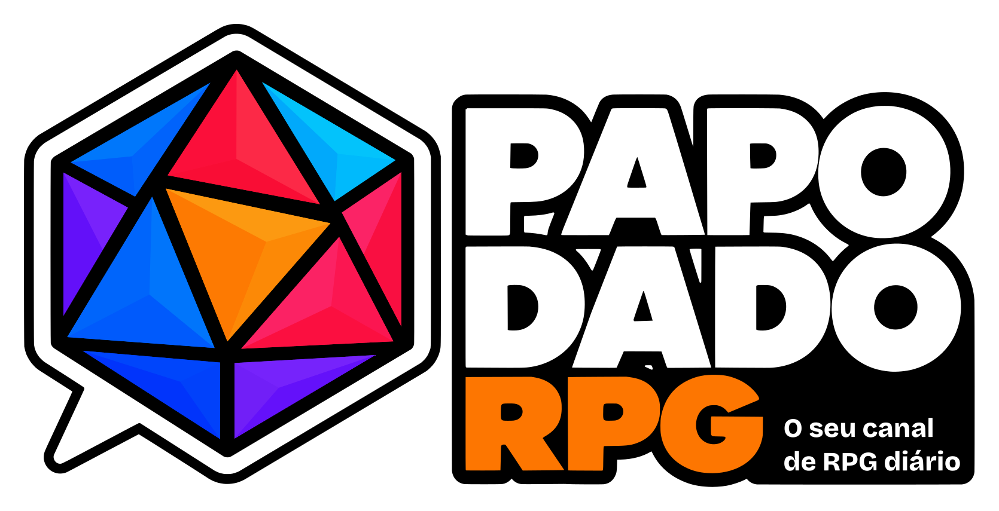
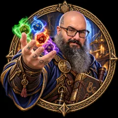
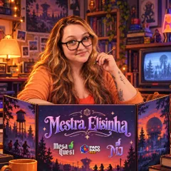

Mesas de RPG ao vivo quase toda noite, com cortes e conteúdo novo todo dia. Puxa uma cadeira: o dado já vai rolar.
Do outro lado do escudo
Toda semana na mesa
Horários de Brasília. Cada campanha é quinzenal: quando duas aparecem no mesmo dia, elas se revezam a cada semana.
Mudou algum horário? Os avisos saem primeiro na comunidade do WhatsApp e no Instagram. Quer as lives no seu calendário? Use o botão “＋ Agenda” em cada campanha.
No ar no canal
As campanhas que vão ao ar nas nossas lives. Clique numa campanha para ver os episódios e o resumo da última sessão.
Para maratonar do começo ao fim
Campanhas que chegaram ao fim, com todos os episódios nas playlists do canal.
Mesas abertas no MesaQuest
Quer sentar na mesa em vez de só assistir? Estas são as mesas do Henrique e da Elisinha no MesaQuest. Quando tem vaga, é só entrar. Valores, regras e tudo o que está incluso ficam na página de cada mesa.
Como jogar com a gente
O que todo mundo pergunta antes de sentar na mesa.
Como faço para jogar numa mesa do Papo Dado?
As nossas mesas ficam no MesaQuest. Escolha uma mesa com vaga logo acima, clique em “Quero jogar” e faça a inscrição por lá. Se a mesa estiver completa, abra a página dela no MesaQuest para acompanhar quando abrir vaga.
Quanto custa?
Depende da mesa. Nas campanhas, o valor é mensal; one-shots e aventuras curtas têm valor único. O pagamento é feito pelo MesaQuest. Para ver o valor exato, o tipo de mesa e o que está incluso, abra a página da mesa no MesaQuest (botão “Quero jogar” ou “Ver a mesa”).
Quais sistemas vocês mestram?
O Henrique mestra D&D e Terra Devastada. A Elisinha mestra Tales from the Loop. O sistema de cada mesa aparece no card dela.
Preciso ter experiência com RPG?
Não. A maioria das nossas mesas é para todos os níveis. Quando uma mesa pede mais experiência, o card mostra o nível (por exemplo, “Intermediário”).
Com que frequência são as sessões e quanto tempo duram?
As campanhas do canal jogam a cada duas semanas, à noite, em sessões de cerca de 3 horas. Algumas mesas têm sessões mais longas: as da Elisinha, por exemplo, podem chegar a 4 horas. A frequência e a duração de cada mesa aparecem no card dela, e os dias e horários (de Brasília) das lives estão na agenda lá em cima.
As sessões vão ao ar no canal?
Só algumas. As campanhas da seção “No ar no canal” são transmitidas ao vivo no YouTube, então quem joga nelas participa da live. As mesas da Elisinha e as mesas em off do Henrique, às sextas, não são transmitidas: é só o grupo jogando, longe das câmeras. No card de cada mesa aparece se ela é “Ao vivo no canal” ou “Sem transmissão”.
As mesas são online? Que ferramentas vocês usam?
Sim, todas são online. Como mesa virtual usamos o Foundry VTT e o WorldCraft. As chamadas são pelo Discord ou pelo Google Meet, e nas mesas transmitidas o áudio e o vídeo passam pelo VDO Ninja. As ferramentas de cada mesa aparecem no card dela e na página dela no MesaQuest.
Como fico sabendo das próximas lives?
Ative o sino no YouTube, entre na comunidade do WhatsApp ou adicione as campanhas ao seu calendário pelo botão “Agenda”.
Últimas do canal
Os cortes de cada dia
Um dado que conversa
O Papo Dado RPG começou como um podcast: o primeiro episódio do Papo Dado Cast foi ao ar no Spotify em janeiro de 2024. Pouco depois, ele virou um programa semanal de entrevistas no YouTube, em que Henrique e Elisinha recebiam criadores de conteúdo, influenciadores e personalidades do RPG. Foi isso que trouxe visibilidade ao canal.
Ainda em 2024 vieram as primeiras mesas ao vivo: O Mundo de Kraken, com o Mestre Maikediz, e Maldição de Strahd, com o Mestre Benites, com Henrique e Elisinha do lado dos jogadores. As duas já rolavam em off, e até presencialmente entre amigos, antes de chegar ao canal.
Em 2025 o Henrique se tornou mestre profissional e o número de mesas no canal cresceu muito. Em 2026 foi a vez da Elisinha, que passou a mestrar pelo MesaQuest e se especializou em Tales from the Loop. Hoje o Papo Dado é um canal de transmissões e conteúdo de RPG todo dia.
O nome diz o que a gente faz: rolar dado e conversar. O d20 de vitral do nosso símbolo é o RPG, o balão de fala é o papo que sempre acompanha a mesa, e a face laranja no centro é o play, que aparece aqui todo dia.
- Janeiro de 2024Estreia do Papo Dado Cast no Spotify.
- 2024O podcast vira programa semanal de entrevistas no YouTube.
- 2024Primeiras lives: O Mundo de Kraken (Mestre Maikediz) e Maldição de Strahd (Mestre Benites).
- 2025Henrique vira mestre profissional e as mesas no canal se multiplicam.
- 2026Elisinha passa a mestrar pelo MesaQuest, a marca ganha nova identidade visual e o canal chega a dez campanhas ao vivo, com conteúdo todo dia.

Henrique Müller
Mestre e jogador há mais de 20 anos, joga “pela historinha”: o foco é narrativa, construção de mundo e desenvolvimento dos personagens. Mestra D&D e Terra Devastada. Também é cofundador do MesaQuest.
★ 10,0 · 58 avaliações no MesaQuest
Elisinha Müller
Mestra de Tales From the Loop e jogadora de D&D há mais de 6 anos. Adora sistemas novos e narrativos e mesas que mexem com a emoção dos jogadores. As mesas dela não são transmitidas. Também é cofundadora do MesaQuest.
★ 10,0 · 33 avaliações no MesaQuestEntra pra mesa com a gente
Avisos de live, bastidores, enquetes e conversa sobre RPG todo dia.
papodadorpg@gmail.com